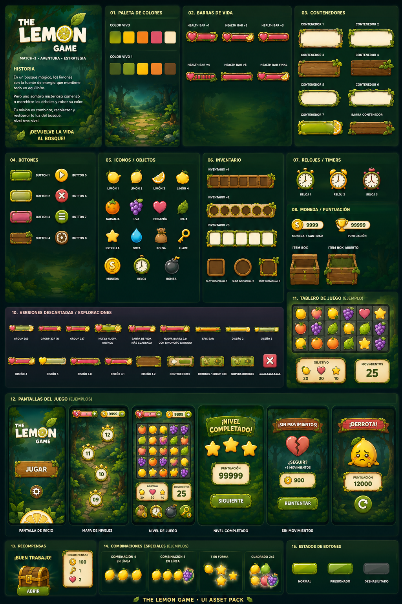
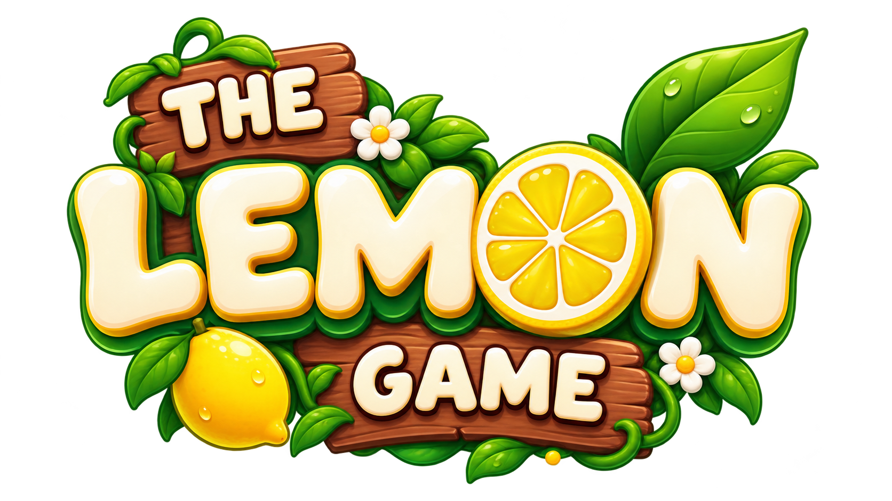
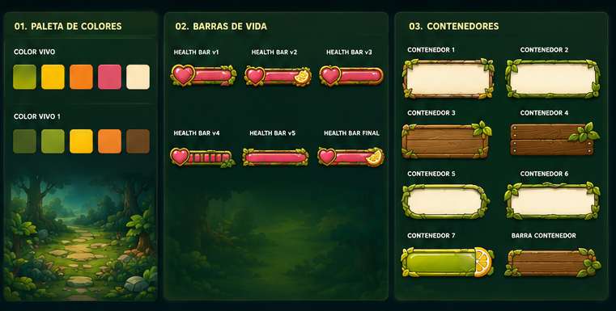
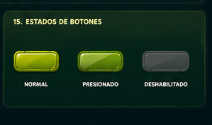
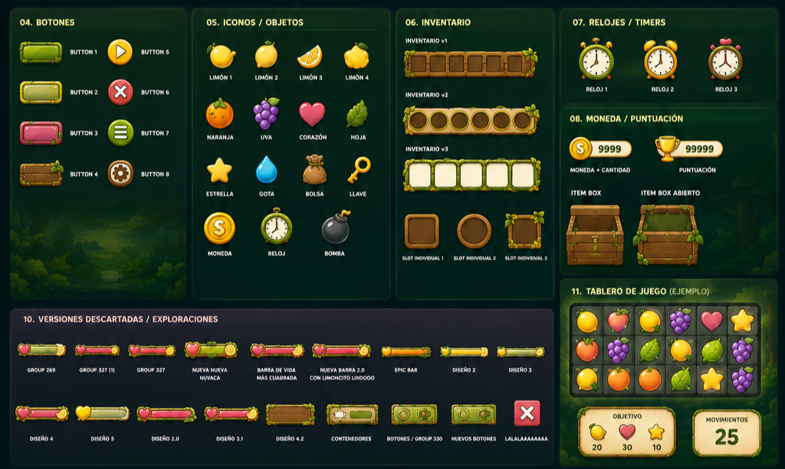

Librería completa de componentes de HUD para un videojuego 2D, con estilo cartoon y colores vivos para una experiencia visual clara y amigable.

El logotipo sigue la misma estética cartoon del resto del kit: tipografía redondeada tipo "puffy", un cartel de madera como base, hojas y flores alrededor, y una rodaja de limón reemplazando la "O" — el mismo lenguaje visual que después se repite en botones, contenedores e iconografía.

The Lemon Game necesitaba un HUD (Heads-Up Display) coherente y fácil de leer en pantalla durante el juego: barra de vida, inventario, monedas, botones y timers. El reto fue diseñar un UI kit completo, no solo pantallas sueltas, para que cualquier elemento nuevo pudiera armarse combinando las mismas piezas base.
Trabajé con un enfoque de atomic design: definí primero una paleta de color viva (verde lima, amarillo, naranja, rosa) y a partir de ahí construí cada componente —barras de vida, botones, contenedores, iconos, inventario, relojes y marcador de puntuación— probando varias versiones de cada uno hasta quedarme con la que mejor leía en pantalla.
El inventario, por ejemplo, tiene tres variantes (contenedor lineal, circular y tipo cofre) documentadas para que el equipo de desarrollo elija según el contexto de uso. También definí los estados de los botones —normal, presionado y deshabilitado— para que el equipo de desarrollo supiera exactamente cómo debía comportarse cada uno.


Documenté también las versiones descartadas de cada componente: parte del trabajo de diseño de HUD es probar muchas variantes de una misma barra de vida o botón hasta encontrar la que se lee mejor a la distancia y en movimiento, algo clave en un videojuego donde el jugador no se detiene a mirar la interfaz.

Diseñar por componentes reutilizables ahorra muchísimo tiempo cuando el juego crece y se necesitan pantallas nuevas.
En un HUD, la legibilidad rápida importa más que el detalle: hay que diseñar pensando en que se mira de reojo.